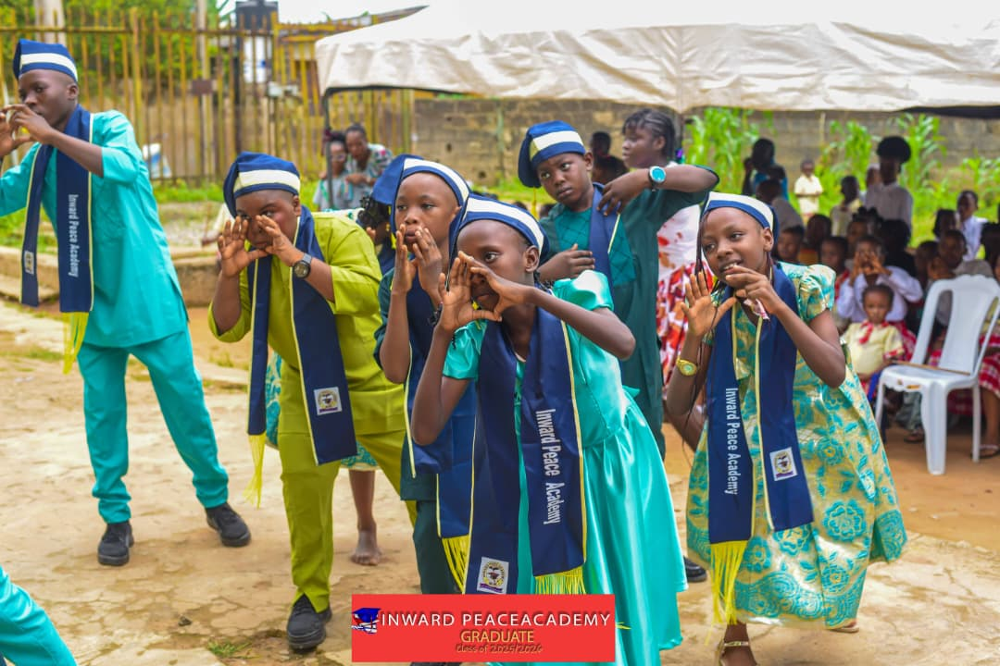
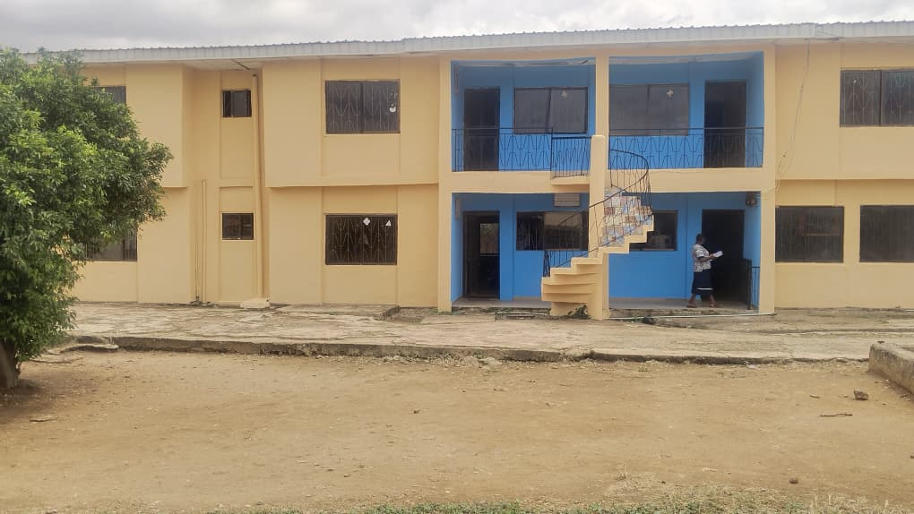

Quality education
Build strong foundations through purposeful, engaging learning.
Excellence · Character · Discovery
At Inward Peace Academy, children find the encouragement to ask questions, discover their strengths and grow with confidence.


A thoughtful start
We believe a strong education gives children more than knowledge. It helps them become thoughtful learners, good friends and confident contributors to their community.
Our school brings learning, creativity and care together, so every child can take their next step with purpose.
Get to know usThe difference is in the everyday
A considered approach to learning, relationships and each child's growing confidence.
Build strong foundations through purposeful, engaging learning.
Encouraging adults help each pupil feel seen and ready to learn.
Children deserve a welcoming environment where they can grow with confidence.
Respect, responsibility and kindness belong in every school day.
A journey that grows with them
From first questions to deeper understanding, each stage supports the next step in a child's learning.
Ages and entry details to confirm
Foundational learning, curiosity, social development and exploration.
Explore academicsBuild confidence and fluency
Literacy, numeracy, discovery and independent learning habits.
Explore academicsReady for what comes next
Deeper understanding, problem-solving and confident preparation for the next stage.
Explore academics

Beyond the classroom
Friendship, movement and imagination all help shape a child's school years. Explore the experiences that can make each day richer.
“Inward Peace Academy has helped me in many ways. My teachers are kind, caring, and always willing to help me learn. They have taught me how to read, write, and count very well. The school has also taught me to be a good child, have good manners, respect my elders, and show love and kindness to others. I have learned the importance of being neat and smart, keeping my uniform clean, and taking care of my environment. I also enjoy playing and making friends at school. During break time, we play games, have fun, and learn together. I love my school because it is helping me grow, learn, and become a better person as I prepare for the future.”
“My name is Adeseko Emmanuella. I was brought to Inward Peace Academy when I was just one month old, and I have grown up learning and developing in this school. Inward Peace Academy has helped me in many ways. It has helped me improve academically, taught me to be friendly, and encouraged me to develop good character. At Inward Peace, we learn that education is not only about books and academics. We are also taught about the things of God, good morals, respect, proper greetings, and the importance of preparing for the future. I especially love how we begin each school day with the Word of God during our morning assembly. This has helped me grow not only academically, but also spiritually and personally. I am grateful to be a pupil of Inward Peace Academy because of everything I have learned and the positive impact the school has had on my life.”
Our school at a glance
A glimpse of school days
A glimpse of Inward Peace Academy's pupils, campus and sports-day moments.
A strong beginning
Start a conversation with Inward Peace Academy and find out more about joining our school community.